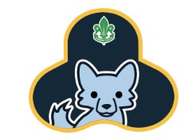
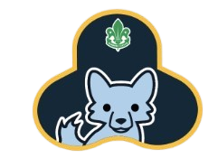
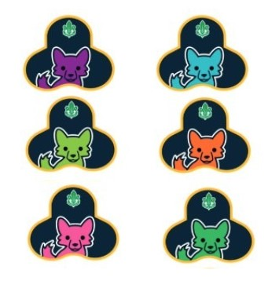
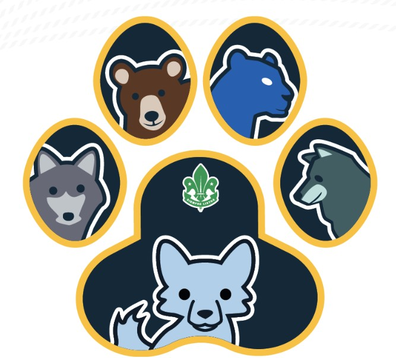
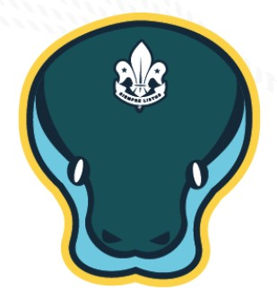
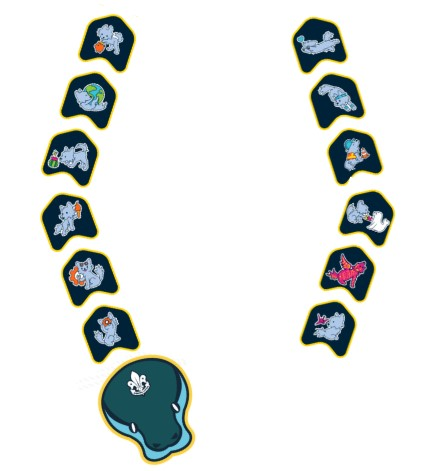
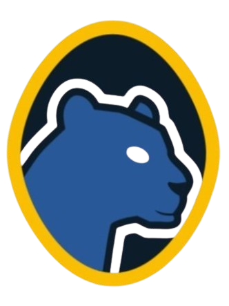
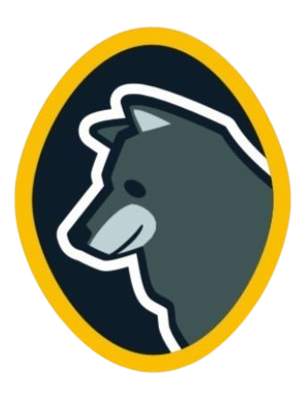
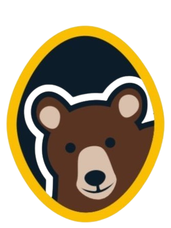
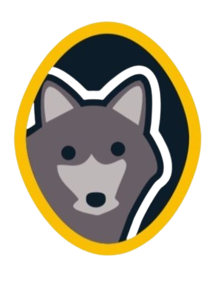

Para poder navegar en la página no utilices los controles de tu navegador
usa solamente los controles que aparecen en pantalla al final de cada página.
Selecciona tu sección:
Links a los documentos generales en los que se basó el contenido de esta página y contenido adicional para
el desarrollo de actividades
El Programa Jóvenes en el Movimiento Scout es la totalidad de las oportunidades de aprendizaje en las que los jóvenes son protagonistas (qué), creadas para alcanzar el propósito del Movimiento Scout (por qué), que se viven a través del Método Scout (cómo) y que se desarrollan en distintos escenarios de aprendizaje (dónde).
Abrir DocumentoEsta política asegura que las voces de los NNAJ sean atendidas, apreciadas y consideradas en los procesos de toma de decisiones dentro del Movimiento. Además, la política tiene como objetivo establecer un entorno inclusivo y diverso, en el que se respeten y celebren las diferencias, y se promueva la igualdad de oportunidades para todas las niñeces, adolescencias y juventudes, así como una demanda a garantizar y promover entornos seguros para mantenerlos A Salvo del Peligro.
Abrir Documento
Una colaboración activa en la creación y difusión de recursos, en la que se pueda compartir
el conocimiento y la experiencia enriqueciendo el repertorio de actividades disponibles.
Promoviendo la diversidad de enfoques y garantizando una oferta variada de actividades.
Aquí podrás encontrar información sobre, RECME, Fichas de acción educativa e ideas que
te ayudaran a que tengas más opciones para tus actividades Scout.
Guía nacional para la obtención de la insignia mundial Mensajeros de la Paz
Los Scouts se convierten en mensajeros de valores de paz mediante acciones
y actividades de desarrollo en comunidad. El mensaje de paz es comunicado cada vez que
los Scouts extienden sus manos para ayudar a los que lo necesitan,
inspirados por su deber hacia otros.
Esta guía será una herramienta que te permitirá conocer a detalle sobre el Desafío Champions for Nature, en ella se encontrarán las rutas de aprendizaje y los objetivos específicos de esta iniciativa así como la metodología propuesta para lograr los objetivos de esta ruta.
Abrir DocumentoEsta guía es una herramienta que te llevará a conocer la manerade incursionar en el Desafío Plastic Tide Turners, incluye las rutas de aprendizaje y los objetivos específicos de esta iniciativa, además se presenta la metodología general con solo 4 pasos: DESCUBRE, COMPROMÉTETE, ACTÚA, CELEBRA.
Abrir DocumentoEste manual está diseñado para ayudar a crear conciencia, aumentar el conocimiento y desarrollar las habilidades de niños y jóvenes en relación a la Energía Solar. Apunta a ayudar a dirigentes scouts a identificar, planear, prepararse y generar oportunidades de aprendizaje solar.
Abrir Documento
De acuerdo a los 4 ejes temáticos:



Existen dos insignias las cuáles son parte de la identidad de la sección, es decir, no se ganan, se entregan como símbolo de pertenencia.
Tu Primer Rastro lo obtendrás cuando seas parte del Pueblo Libre y con éste, llegarán algunos gamos como tu Compromiso.
(Mis Rastros en la Selva, pág. 62)


La cabeza de Kaa será el inicio de la obtención de insignias de especialidades
(Guía de Scouter de Manada de Lobatos , pág. 74)



PANTANOS DEL NORTE
No siempre cruzarás cazaderos sencillos, aquí junto a Bagheera
encontrarás la naturaleza, tu Medio Ambiente, tu cultura y cómo te
relacionas con todo tu entorno.(Mis Rastros en la Selva, pág. 64)
Territorio de Bagheera - Medio Ambiente y Sustentabilidad
Deberás de completar 3 dentelladas para obtener el cazadero (Guía de Scouter de Manada de Lobatos , pág. 47)
| Planos de Relación | Preseas (Metacompetencias) | Dentelladas (Saberes a desarrollar) |
|---|---|---|
| Relación con el entorno | Aprecia el valor de la naturaleza y cuida la biodiversidad |
☐ Cuida el entorno natural ☐ Cuida la biodiversidad |
| Conoce la vida al aire libre, respetando el entorno natural |
☐ Respeta el entorno natural |
|
| Participa en proyectos de desarrollo sustentable, propuestos por los adultos |
☐ Participa en proyectos de desarrollo sustentable |
Para dar inicio a la colocación de las insignias de especialidades se entregará un elemento de identidad, es decir la cabeza de Kaa. (Guía de Scouter de Manada de Lobatos , pág. 74)
| Esquema Anterior | PJOS (Actual) | Descripción |
|---|---|---|
 Ecología
Ecología
|
 Protección del planeta
Protección del planeta
|
Área de especialidad Mang Enfoque orientado al cuidado climático, reducción de huella de carbono y preservación de recursos críticos de la selva. |
 Naturaleza y biodiversidad
Naturaleza y biodiversidad
|
Área de especialidad Mang Acciones enfocadas en el reconocimiento de la flora y fauna local, técnicas scouts de vida al aire libre y reforestación. |
| Esquema Anterior | PJOS (Actual) | Descripción |
|---|---|---|
 Vida al Aire Libre
Vida al Aire Libre
|
 Mohwa
Mohwa
|
Esta insignia es el primer paso para fortalecer tus garras y colmillos para tus cacerías, brindándote la experiencia necesaria cuando salgas a una excursión o campamento. Baloo le explicaba a Mowgli y a cada cachorro del Pueblo Libre de los lobos, todo lo que tenían que saber para salir a recorrer sin contratiempos la selva de Seeonee y por eso, éste será tu punto de partida. (Carnet de Aventuras en la Naturaleza para Manada , pág. 10) |
 Dhâk
Dhâk
|
Con esta insignia conocerás sobre la sustentabilidad y el tema de
no dejar rastro. |
| Iniciativa | Descripción |
|---|---|
 Champions for Nature
Champions for Nature
|
Para tener un Seeonee siempre verde, necesitamos líderes y defensores. Si quieres descubrir más sobre la biodiversidad y los estilos de vida sustentables, el desafío Champions For Nature es para ti. (Mis Rastros en la Selva, pág. 79) |
 Scouts Go Solar
Scouts Go Solar
|
Para innovadores que desean conocercómo las energías limpias pueden salvar al planeta, el desafío Scouts Go Solar nos lleva a conocer acerca de las energías alternativas y su uso para salvar el planeta. (Mis Rastros en la Selva, pág. 80) |
 Plastic Tide Turners
Plastic Tide Turners
|
Puedes cuidar el Waigunga con el desafío Plastic Tide Turner que te permitirá promover un planeta limpio y saludable a través de acciones relacionadas con la reducción, reutilización y reciclado del plástico. (Mis Rastros en la Selva, pág. 80) |

DEKKAN
En este lugar, Hermano Gris será quien te retará a pensar más allá de lo
que puedes ver y tocar, será un espacio de mucha reflexión, solo piensa
que de ahí vienen los Dholes y qué te gustaría que ellos cambiaran, para
que en lugar de destruir la Selva y todo a su paso, tomen conciencia de
lo importante que somos todos y todas. El Dekkan es ese lugar donde la
cacería será más allá, tocará tu espíritu. (Mis Rastros en la Selva, pág. 64)
Hermano Gris - Paz y Participación Comunitaria
Deberás de completar 7 dentelladas para obtener el cazadero (Guía de Scouter de Manada de Lobatos , pág. 47)
| Planos de Relación | Preseas (Metacompetencias) | Dentelladas (Saberes a desarrollar) |
|---|---|---|
| Relación conmigo mismo | Escucha la opinión de sus pares y de los adultos para hacer Siempre lo Mejor |
☐ Escucha la opinión de los demás para hacer siempre lo mejor |
| Relación con los demás | Convive con los demás, practicando la empatía, la solidaridad y el respeto hacia la diversidad social |
☐ Convive con los demás, practicando el respeto hacia la diversidad social |
| Escucha la opinión de sus pares y de los adultos para hacer Siempre lo Mejor |
☐ Participa activamente en procesos democráticos para la toma de desiciones, tendiendo al bien común |
|
| Se siente orgulloso de su familia y de su patria, aprendiendo a convivir desde la cultura de la paz |
☐ Siente orgullo de su familia y de su patria ☐ Aprende desde una cultura de paz |
|
| Relación con el entorno | Reconoce el valor de su herencia cultural y respeta las culturas diferentes de la propia |
☐ Reconoce el valor de su herencia cultural ☐ Respeta las culturas diferentes de la propia |
Para dar inicio a la colocación de las insignias de especialidades se entregará un elemento de identidad, es decir la cabeza de Kaa. (Guía de Scouter de Manada de Lobatos , pág. 74)
| Esquema Anterior | PJOS (Actual) | Descripción |
|---|---|---|
 Humanidades
Humanidades
|
 Paz y acciones humanitarias
Paz y acciones humanitarias
|
Área de especialidad Mysa Fomenta la ciudadanía activa y la resolución pacífica de conflictos. Se centra en que el lobato entienda su entorno social, participe en procesos democráticos y realice acciones de servicio que impacten positivamente en su comunidad inmediata. |
 Diversidad e Inclusión
Diversidad e Inclusión
|
Área de especialidad Kotick Promueve el respeto absoluto por las diferencias humanas (capacidades, etnias, religiones o géneros). Se enfoca en derribar barreras y prejuicios, enseñando a la manada que la convivencia basada en la equidad y la empatía nos hace una sección más fuerte y unida. |
|
 Cultura y Patrimonio
Cultura y Patrimonio
|
Área de especialidad Pukeena Orientado al rescate y valoración de las raíces, tradiciones e historia local y nacional. Busca que los jóvenes reconozcan la riqueza de su legado cultural, protejan los monumentos o sitios históricos y fortalezcan su sentido de identidad y pertenencia. |
| Iniciativa | Descripción |
|---|---|
 Mensajeros de la Paz
Mensajeros de la Paz
|
La Manada sabe qué tan importantees la Selva como quienes viven en ella. Mensajeros de la Paz es una cicatriz que puedes cazar si participas en una actividad organizada por tus Viejos Lobos, maestros o padres y acumulas al menos 300 horas de servicio relacionado con la Paz o el Desarrollo Comunitario. (Mis Rastros en la Selva, pág. 79) |

COLINAS DEL SEEONEE
Al salir de cacería con Baloo te darás cuenta que existen otros cubiles en la Selva del Seeonee, ahí podrás rastrear gamos diferentes y aprender técnicas nuevas para cazarlos; también conocerás otros sitios como la Aldea del Hombre, en donde existen otras especies de habitantes ¡Inicia esta exploración!
Territorio de Baloo - Habilidades para la Vida
Deberás de completar 6 dentelladas para obtener el cazadero
| Planos de Relación | Preseas (Metacompetencias) | Dentelladas (Saberes a desarrollar) |
|---|---|---|
| Relación conmigo mismo | Se reconoce como una persona integrada por los ámbitos corporal de la voluntad, intelectual, afectivo-emocional, y aplica las recomendaciones del adulto para su autocuidade, así como sobre el reconocimiento de sus capacidades y límites. |
☐ Aplica las recomendaciones del adulto para su autocuidado ☐ Reconoce sus capacidades y límites ☐ Se reconoce como una persona integrada por el ámbito intelectual |
| Escucha la opinión de sus pares y de los adultos para hacer Siempre lo mejor |
☐ Escucha la opinión de sus pares y de los adultos |
|
| Relación con los demás | Convive con los demás, practicando la empatía, la solidaridad y el respeto hacia la diversidad social |
☐ Convive con los demás, practicando la empatía, la solidaridad y el respeto |
| Escucha la opinión de sus pares y de los adultos para hacer Siempre lo Mejor |
☐ Trabaja en equipo |
|
| Relación con el entorno | Conoce la via al aire libre, respetando el entorno natural |
☐ Identifica herramientas o acciones que hacen bien a su entorno natural |
Para dar inicio a la colocación de las insignias de especialidades se entregará un elemento de identidad, es decir la cabeza de Kaa.
| Esquema Anterior | PJOS (Actual) | Descripción |
|---|---|---|
 Tecnología y Ciencia
Tecnología y Ciencia
|
 Emprendimiento
Emprendimiento
|
Área de especialidad Darzee Desarrolla el pensamiento creativo y la capacidad de convertir ideas en soluciones. Se centra en la gestión de recursos, la planificación de pequeños proyectos y el aprendizaje del valor del trabajo y el ahorro para alcanzar metas propias. |
 Tecnología e Innovación
Tecnología e Innovación
|
Área de especialidad Darzee Promueve la curiosidad por el funcionamiento de las cosas y el uso ético de las herramientas digitales. Se enfoca en resolver problemas cotidianos mediante la ciencia, la experimentación y la adaptación a los cambios del mundo moderno. |
|
 Expresión y Comunicación
Expresión y Comunicación
|
 Artes
Artes
|
Área de especialidad Mao/Mor Impulsa la expresión personal a través de lenguajes creativos como la música, el teatro, la pintura o la danza. Busca que el joven explore su sensibilidad, mejore su comunicación no verbal y valore la belleza en todas sus manifestaciones. |
 Liderazgo
Liderazgo
|
Área de especialidad Darzee Orientado a la toma de decisiones, la motivación de equipos y la responsabilidad. Fomenta que el lobato aprenda a guiar a sus pares con el ejemplo, a escuchar activamente y a coordinar esfuerzos para lograr un objetivo común en la manada. |
| Esquema Anterior | PJOS (Actual) | Descripción |
|---|---|---|
|
Vida al Aire Libre
|
Mohwa
|
Esta insignia es el primer paso para fortalecer tus garras y colmillos para tus cacerías, brindándote la experiencia necesaria cuando salgas a una excursión o campamento. Baloo le explicaba a Mowgli y a cada cachorro del Pueblo Libre de los lobos, todo lo que tenían que saber para salir a recorrer sin contratiempos la selva de Seeonee y por eso, éste será tu punto de partida. |
 Flor Roja
Flor Roja
|
Esta insignia la podrás obtener cuando hayas vivido varias cacerías lejos de tu cubil, en distintas selvas; disfrutando las Aventuras en la Naturaleza de forma responsable, divertida y segura. Deberás probar también que lo que conoces y sabes hacer lo compartes y lo pones al servicio de los demás. Es capaz de resolver problemas con sus habilidades de cabuyería; que sabe pasar varias lunas fuera de su cubil de manera segura y cómoda, en una comunión respetuosa y armónica con la Naturaleza; que puede explorar con éxito la selva y aprender cosas nuevas en cada nueva cacería. |

CUBIL
Aquí reconocerás lo que eres y lo que tienes para compartir con la Selva y tus hermanos
Lobatos y Lobeznas.¡Aquí podrás mejorar tus formas de cazar! Y aunque vayas a explorar
otros sitios, aquí podrás regresar cada vez que lo necesites. Es tu casa.
Territorio de Raksha - Salud y bienestar
Deberás de completar 4 dentelladas para obtener el cazadero
| Planos de Relación | Preseas (Metacompetencias) | Dentelladas (Saberes a desarrollar) |
|---|---|---|
| Relación conmigo mismo | Se reconoce como una persona integrada por los ámbitos corporal de la voluntad, intelectual, afectivo-emocional, y aplica las recomendaciones del adulto para su autocuidade, así como sobre el reconocimiento de sus capacidades y límites. |
☐ Se reconoce como una persona integrada por el ámbito corporal (alimentación, descanso, higiene, ejercicio) ☐ Se reconoce como una persona integrada por el ámbito de la voluntad ☐ Se reconoce como una persona integrada por el ámbito afectivo-emocional |
| Relación con el entorno | Conoce la via al aire libre, respetando el entorno natural |
☐ Reconoce los beneficios de vida al aire libre en su cuerpo y salud |
Para dar inicio a la colocación de las insignias de especialidades se entregará un elemento de identidad, es decir la cabeza de Kaa.
| Esquema Anterior | PJOS (Actual) | Descripción |
|---|---|---|
 Deporte
Deporte
|
 Deportes y Cultura Física
Deportes y Cultura Física
|
Área de especialidad Jacala Promueve el desarrollo motor y el hábito del ejercicio constante. Se centra en el trabajo en equipo, la disciplina deportiva y el conocimiento del propio cuerpo, enseñando que la actividad física es la base para una vida llena de energía y salud. |
 Seguridad y Rescate
Seguridad y Rescate
|
 A Salvo del Peligro
A Salvo del Peligro
|
Área de especialidad Rikki Tikki Tavi Orientado a la prevención y la seguridad personal. Busca que el lobato aprenda a identificar situaciones de riesgo en su entorno (hogar, escuela o calle), conozca los primeros auxilios básicos y comprenda la importancia de cuidar su integridad física y emocional. |
 Salud
Salud
|
Área de especialidad Rikki Tikki Tavi Se enfoca en la higiene personal, la alimentación balanceada y el autocuidado. El objetivo es que los jóvenes comprendan cómo prevenir enfermedades, valoren la importancia de los hábitos saludables y se conviertan en promotores de bienestar dentro de su familia. |
| Esquema Anterior | PJOS (Actual) | Descripción |
|---|---|---|
|
Vida al Aire Libre
|
Mohwa
|
Esta insignia es el primer paso para fortalecer tus garras y colmillos para tus cacerías, brindándote la experiencia necesaria cuando salgas a una excursión o campamento. Baloo le explicaba a Mowgli y a cada cachorro del Pueblo Libre de los lobos, todo lo que tenían que saber para salir a recorrer sin contratiempos la selva de Seeonee y por eso, éste será tu punto de partida. |
 Tregua del Agua
Tregua del Agua
|
Con esta insignia vas a obtener habilidades que te ayudarán a protegerte y cuidarte a ti y
proteger y cuidar a los demás. Al obtener estas presas, aprenderás a estar a salvo del peligro
en los espacios que vayas de cacería, con quienes te acompañen Lobatos, Lobeznas, Viejos Lobos
o cualquier otrapersona, y sabrás detectar cuando hay peligro y qué hacer en esos casos. Si usas internet, descubrirás cómo cuidarte y cuidar a las demás personas con las que convives a través de este medio tan útil y divertido, pero que puede convertirse en un riesgo si no tomamos precauciones. Por si fuera poco, vas a conocer sobre la importancia de reaccionar adecuadamente ante una emergencia y cómo poder ayudar de manera adecuada y responsable a tus Viejos Lobos y a las personas especialistas. |
Pon en práctica lo que aprendiste y relaciona cada insignia con los temas ejemplos a desarrollar en la especialidad
Links a todos los documentos en los que se basó el contenido de esta página y contenido adicional para
el desarrollo de actividades
Sección MANADA DE LOBATOS
Guía principal de progresión de la Manada basada en el marco simbólico de El Libro de la Selva, donde los Lobatos y Lobeznas aprenden valores, liderazgo, trabajo en equipo, servicio, sustentabilidad y participación comunitaria mediante ceremonias, insignias, juegos y actividades educativas.
Abrir DocumentoMaterial complementario enfocado en actividades al aire libre, campismo, exploración y educación ambiental, donde los Lobatos y Lobeznas desarrollan habilidades prácticas mediante retos progresivos relacionados con naturaleza, sustentabilidad, cabuyería, excursiones y filosofía de “No Dejar Rastro”
Abrir DocumentoEste es el manual técnico dirigido a los adultos (Scouters). Es una guía pedagógica que explica cómo aplicar el Método Scout en niños de 6 a 9 años. Detalla la estructura de la Manada, el papel de los dirigentes como "viejos lobos", la importancia del juego como herramienta de aprendizaje y cómo gestionar el Plan de Adelanto Progresivo.
Abrir Documento